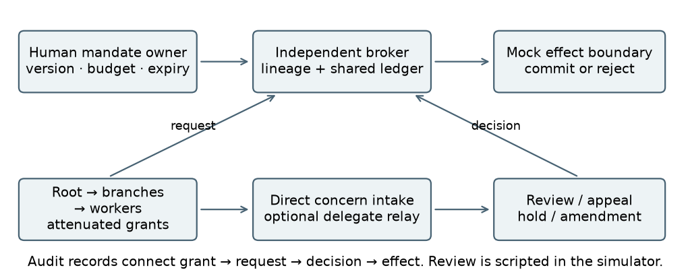

An organizational limit must survive delegation.
Execute is a working term for the effective capacity to turn decisions into changes through tools, resources and other actors.
Giving two subsidiaries a 100-unit limit each does not preserve a shared 100-unit budget. The protocol connects each action to its mandate, its ancestors and a common resource ledger.
It also provides direct review access: a representative may organize concerns, but cannot prevent a minority report from reaching a reviewer.
From mandate to effect

What the reference model shows
8 scenarios × 4 regimes × 3 delays × 2 delegation depths.
Individual limits compared with full hierarchical enforcement.
The availability cost of false complaints in the review arm.
| Control | Mandate violations | Hazardous effects | Valid work |
|---|---|---|---|
| Logging | 66 | 60 | 288 / 348 |
| Individual limits | 54 | 60 | 288 / 348 |
| Hierarchy | 0 | 60 | 288 / 348 |
| Hierarchy + review | 0 | 0 | 316 / 348 |
These are consequences of authored rules and fault schedules. They validate the reference protocol under its assumptions. They do not estimate model behavior or prove historical incident prevention. An authorized action can still be hazardous.
What does waiting for review cost?
Explore the three measured response delays at delegation depth three. Each reporting scenario contains ten work and ten unrelated auxiliary opportunities.
Logical steps are not measured human response times. The reviewer is scripted and correct. This display uses retained results; it runs no agents.
Where the protection ends
When effects bypass the broker, the separate coverage challenge permits ten hazardous effects, including eight after the relevant authority is removed.
Revoking authority also cannot undo an action already completed. The artifact retains past expenditure while rejecting queued work that has lost permission.
Why institutions matter
The project complements Agent Delegate, by Matías Podeley and Agustín Brusco, with a focus on organizations and their descendants.
The discussion connects We Must Pace the Frontier to a narrower design question: what evidence should be required before an organization expands its execute? The simulator does not evaluate industry-wide pacing.
Read, inspect, reproduce
- Paper PDF — 11 pages including statements, references and appendices.
- Complete artifact ZIP — protocol, code, traces, results and editable paper.
- Standalone LaTeX source
- Full result tables
- Annotated incident trace
From the extracted project folder, with Python 3.10+:
python3 scripts/reproduce.pyRuns 12 tests, recounts metrics from traces and verifies exact replay. The core uses only the standard library and works offline.
Gobernar lo que una organización puede hacer.
La propuesta de Alejandro Garibotti conecta la capacidad de actuar de los agentes —execute— con mandatos, poderes, presupuestos compartidos, revisión y revocación. Crear filiales no debería multiplicar recursos ni conservar facultades que ya fueron retiradas.
El artefacto permite comprobar esas reglas y mostrar sus límites, incluido el costo de las denuncias falsas. El paper es un borrador asistido por IA, con atribución del trabajo previo y resultados de una simulación determinista.